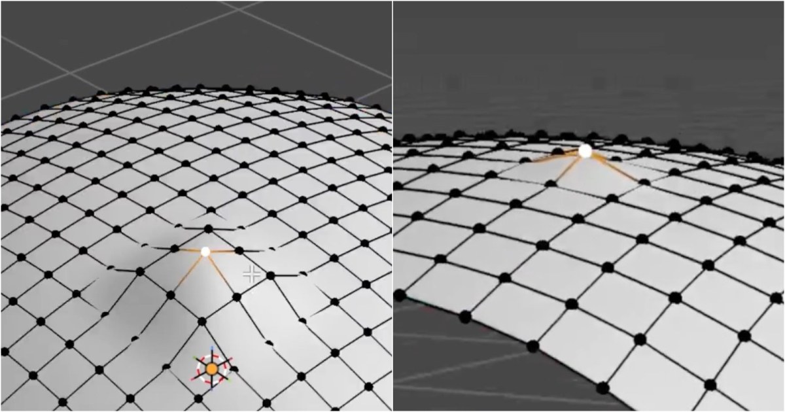

Blender 曲面 Pinching 修正：Alt+S、LoopTools Curve 與 Grid Fill
Jan van den Hemel 示範多種消除曲面凹凸與 pinching 的建模修正法，涵蓋法線方向縮放、Curve 與重建局部拓樸。

Blender 技巧 ★★★★☆
完整分析
技術／流程變更
小範圍凹凸可用 Alt+S 沿法線調整，或反選後以 LoopTools Curve 重整曲面；較大的問題則刪除異常區域，再利用邊界與 Grid Fill 重建局部拓樸。
Production 影響
這些方法適合 hard-surface SubD、布林後清面與角色局部修形，能避免只靠細分或 Smooth 掩蓋拓樸問題，讓輪廓與高光帶在最終烘焙或即時渲染中更穩定。
導入測試與限制
不同曲率與 edge flow 對 Grid Fill 結果差異很大；導入 SOP 時應在高光反射明顯的曲面上檢查 shading，再決定是修點、重拓樸或改變 boolean 前的基礎拓樸。
BRIEF｜來源已驗證；證據深度較有限，完整分析會明確區分已知資訊與待驗證事項。